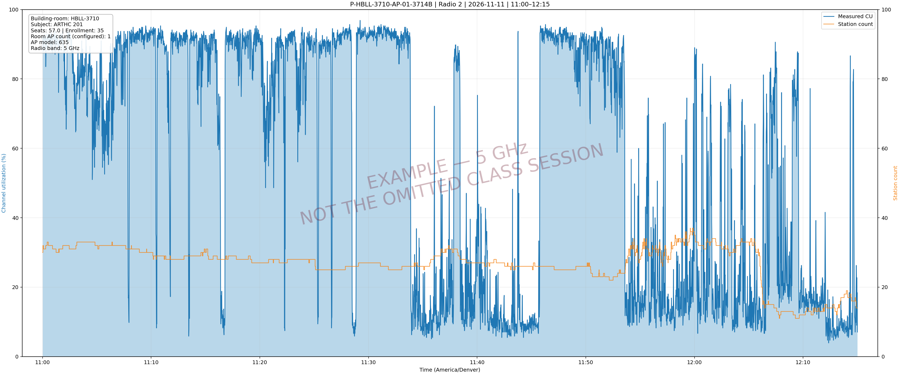

5 GHz example radio/class-session plot
The requested class-session plot is omitted from this public package to limit its size. This watermarked figure demonstrates the plot format using a different class session; it does not provide measurements for the session whose link you followed.
Example source: 2026-HBLL; HBLL-3710|2026-11-11T18:00:00Z|2026-11-11T19:15:00Z; P-HBLL-3710-AP-01-3714B/radio/2.
